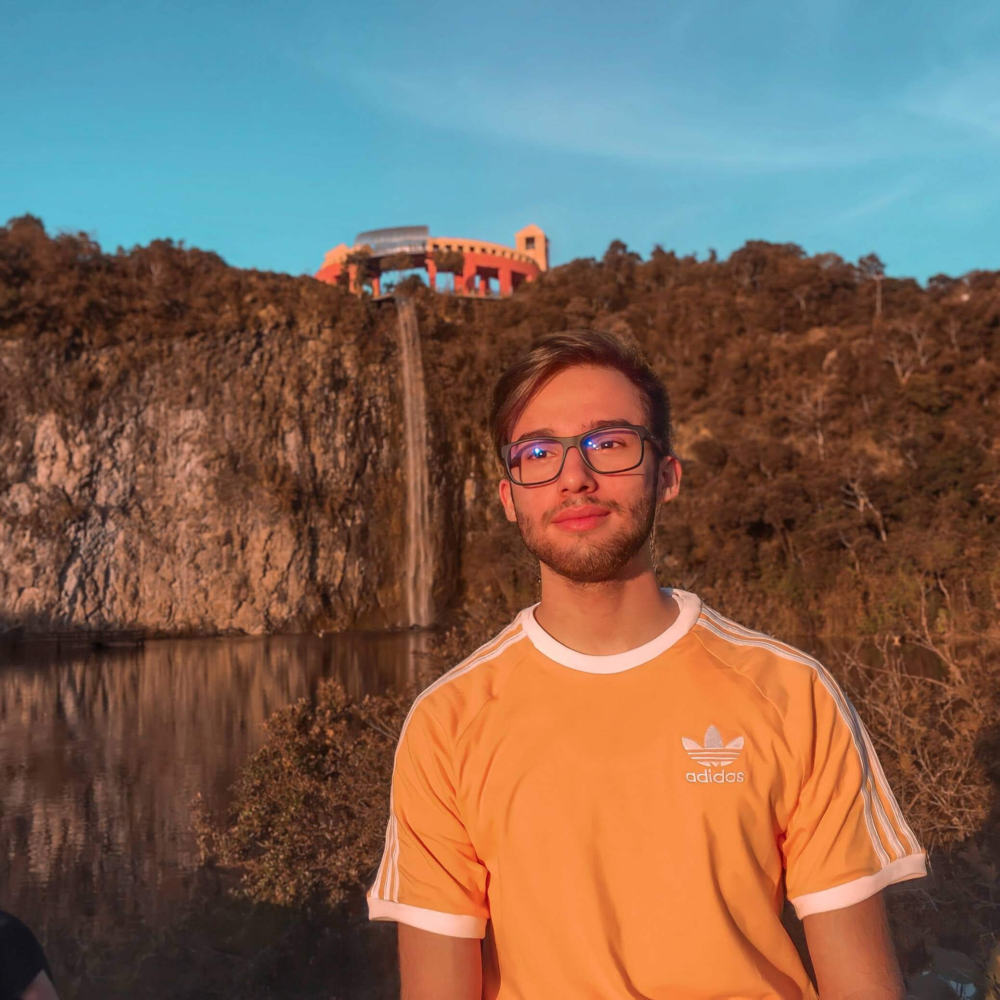
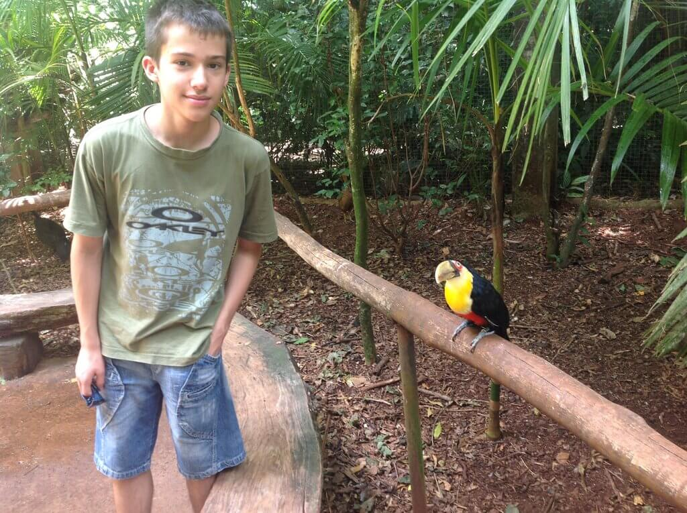

My Three Favorite Animals
Turtle, anteater and toucan are my favorite animals
Hello, dear reader, and welcome! I'm Tiago Ismael Wurmli, a Brazilian college student in the IT field, and because of some experiences I had in my childhood, these became my favorite animals, which I've always had a fascination with and a greater appreciation for than others. The purpose of this blog is for me to share with you, dear reader, the reasons why I love tortoises, anteaters and toucans so much. Explain why they are my favorite animals, how they became special to me, and a little bit of the characteristics of each one. Some were due to events that I had in my life. Also because they have a very peculiar appearance, and something very characteristic that calls a lot of attention. There is the possibility that when you, dear reader, read my reasons and more about each one of them, you can relate to the same feelings, or be inspired to know better about your own tastes through the reflection generated by the path to be taken in this blog.
And what's not to like about the turtle! You, dear reader, see how cute this drawing is.
Just look at that smile!!!

Toucan & Me
Here is a photo I have with one of my favorite animals, the toucan. I was with my family at "Parque das Aves" in Foz do Iguaçu with my parents and my brother. It is an extraordinary park, full of different species of birds, iguanas, butterflies and other animals found in the Atlantic Forest. There we can be in the same environment as some of these animals. It is a unique and worthwhile experience. Even more that there are several other attractions and sights in the city. P.S: I was just a teenager, and I was afraid to get closer to the toucan, because its peck is very strong and I didn't want to count on luck.